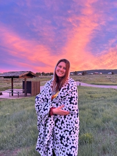

Viktoriia Rakhimova | WDD 130
Hello! My name is Viktoriia Rakhimova but I go by Vika. I am from a 3rd biggest city in Russia called Yekaterinburg. I now live in Rexburg, Idaho with my husband as my best friend. I am a landscape architecture student at Brigham Young University - Idaho. Some of my favorite things to do is watercolor, hang out with my friends, talking to my family, playing volleyball, and so on. I love travelling and learning about different cultures. I have been to obviously Russia, then studied in Latvia as an international student, visited Italy, Belgium, Netherlands, Germany, France, served in Estonia and Lithuania, then moved to the US.